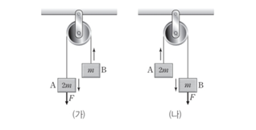

문제:
16. 그림 (가), (나)와 같이 물체 A, B를 실로 연결한 후 (가)에서는 A에, (나)에서는 B에 연직 아래 방향으로 크기가 F인 힘을 각각 작용하였더니 A, B가 각각 등가속도 직선 운동을 한다. A의 가속도의 크기는 (가)에서가 (나)에서의 2배이다. A, B의 질량은 각각 2m, m이다.
이에 대한 설명으로 옳은 것만을 <보기>에서 있는 대로 고르시오. (단, 중력 가속도는 g이고, 실의 질량과 모든 마찰은 무시한다.)
ㄱ. F=3mg이다.
ㄴ. (가)에서 A의 가속도의 크기는 3g/4이다.
ㄷ. 실이 A를 당기는 힘의 크기는 (나)에서가 (가)에서의 2배이다.